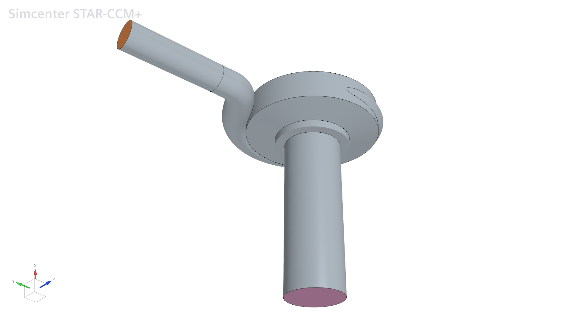
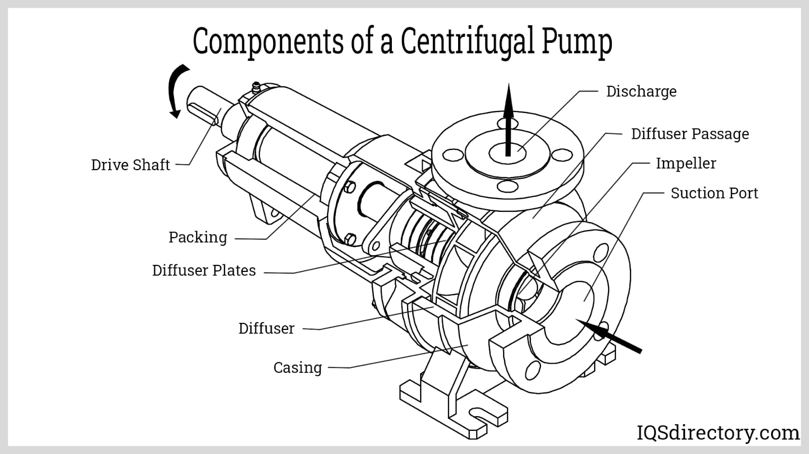
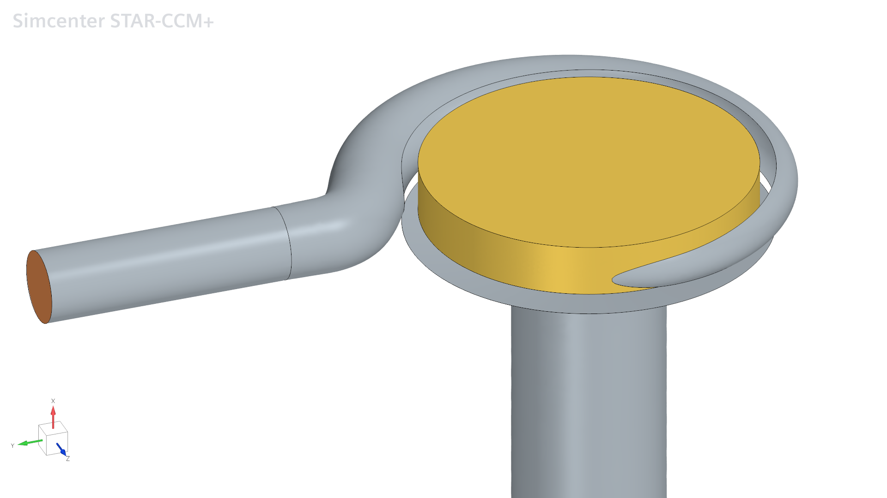
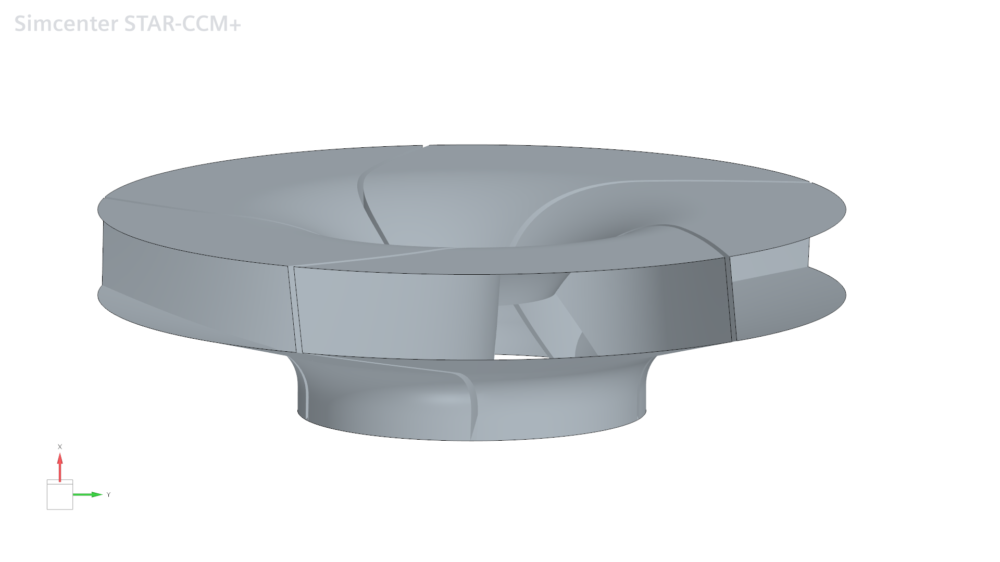
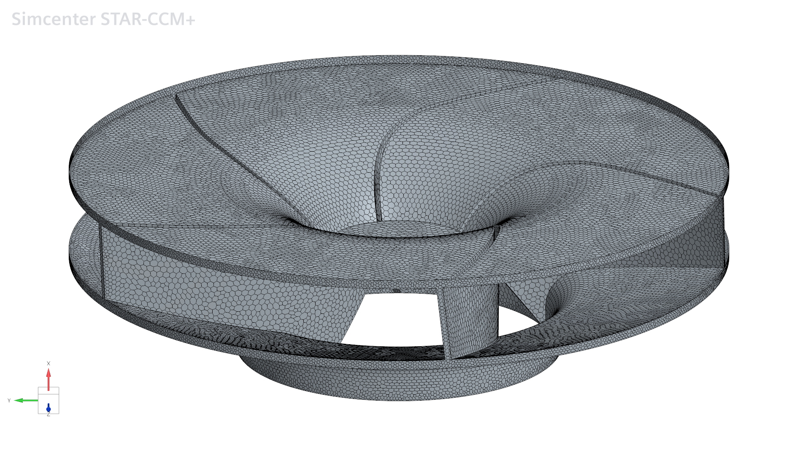
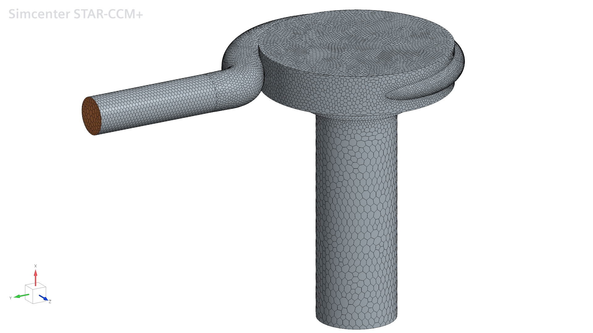
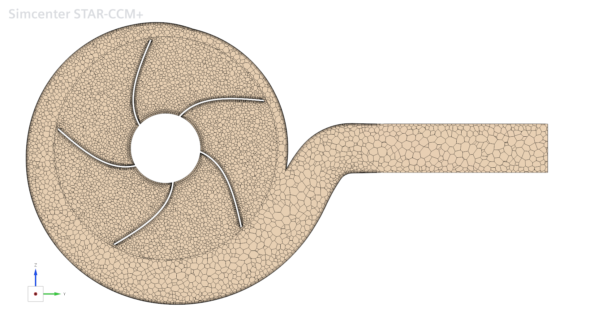
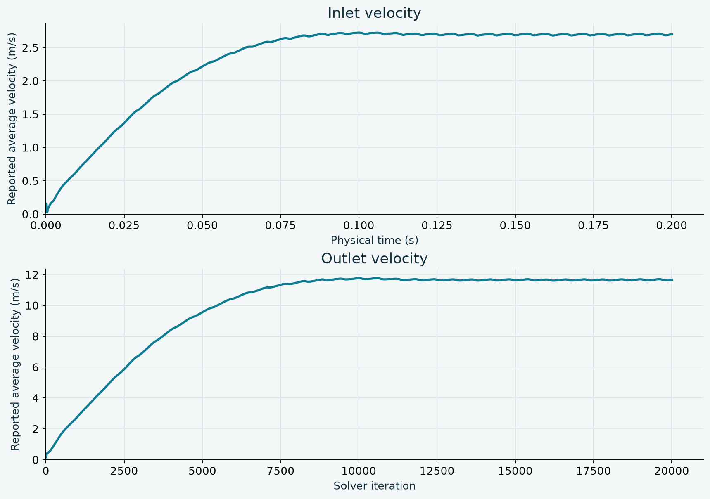

Mechanical engineering · CFD · Project in progress
Centrifugal
pump.
Modelling the flow through a rotating impeller and a stationary casing in STAR-CCM+.

Operating principle
From the inlet to the rotating impeller


Fluid enters through the centre of the impeller. The rotating blades transfer energy to the fluid and drive it outwards into the surrounding volute, which collects the flow and guides it towards the outlet.
The objective
Build a two-region pump simulation
The objective is to set up and couple a rotating impeller region and a stationary casing region in STAR-CCM+, then simulate the development of flow through the pump from an initially stationary fluid.
The rotating region uses Motion / Rotation at 2,000 rpm: its mesh rotates physically relative to the stationary region. This is a Rigid Body Motion (RBM) approach. The first stage of the study is to check the region coupling and examine the resulting velocity fields and inlet/outlet response.
The pink face marks the inlet, leading towards the centre of the impeller. The orange face marks the outlet, connected to the surrounding casing. These two boundaries define where fluid enters and leaves the computational domain.
01 — Geometry and motion
Two regions, one rotating impeller


The fluid domain is divided into two regions. A rotational motion of 2,000 rpm is assigned to the yellow region containing the impeller. The grey region, representing the surrounding casing and connecting passages, remains stationary.
This setup represents the relative motion between the impeller and the casing. The curved blade passages guide the fluid through the rotating part of the pump, while the stationary region connects it to the inlet and outlet.
02 — Mesh
Local refinement around the blades
The finest mesh is assigned to the blades, with a target size of 1 mm. The rotating region uses 2 mm, while the stationary region uses 10 mm. This concentrates resolution around the blade geometry and flow passages, with a coarser mesh in the surrounding stationary domain.



03 — Simulation setup
Flow development from rest
- Solver approach
- Transient CFD
- Turbulence model
- k–ε
- Initial fluid velocity
- 0 m/s throughout the domain
- Time step
- 10⁻⁴ s · 0.1 ms
- Inlet boundary
- Stagnation inlet
- Rotating region speed
- 2,000 rpm
The fluid is initially at rest throughout the domain. The transient simulation follows its response to the rotating impeller, using the k–ε model to represent the effects of turbulence and a time step of 10⁻⁴ s.
At 2,000 rpm, one revolution takes 0.03 s. The chosen time step therefore gives 300 time steps per revolution, corresponding to a rotation of 1.2° per step.
04 — Initial results
Inlet and outlet velocities

The reported average velocities rise during the initial transient and reach approximately 2.70 m/s at the inlet and 11.66 m/s at the outlet at the end of the exports. These are the final recorded values, rather than averages over a settled operating period.
A higher outlet velocity does not by itself indicate a flow imbalance: the inlet and outlet areas must also be considered. The next check is to measure both boundary areas and compare their mass flow rates. Converting an average velocity into a volume flow rate requires the area-averaged velocity component normal to the boundary; an average velocity magnitude is not generally equivalent.
05 — Flow visualisation
Velocity magnitude over time
Two views show how the velocity magnitude evolves inside the pump during the transient simulation.
Study in progress
Checking the flow before assessing performance
The current focus is to inspect the developing flow, confirm that the rotating and stationary regions work together, and check the response at the inlet and outlet. Pressure rise, flow rate and impeller torque will then provide the basis for a more detailed assessment of pump performance.